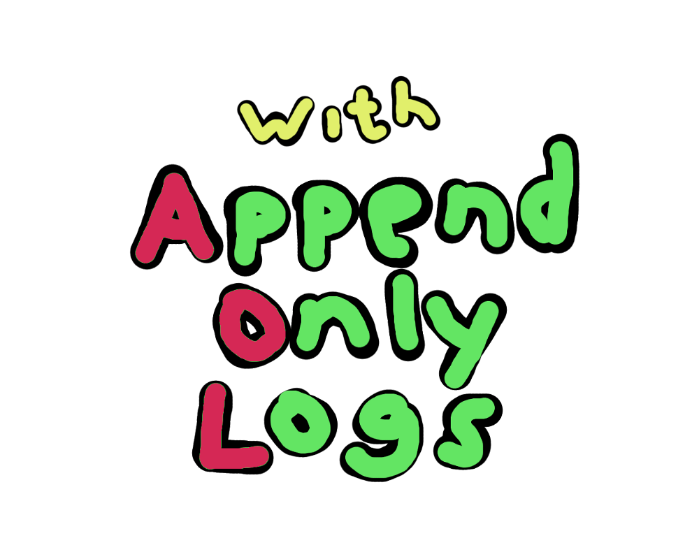
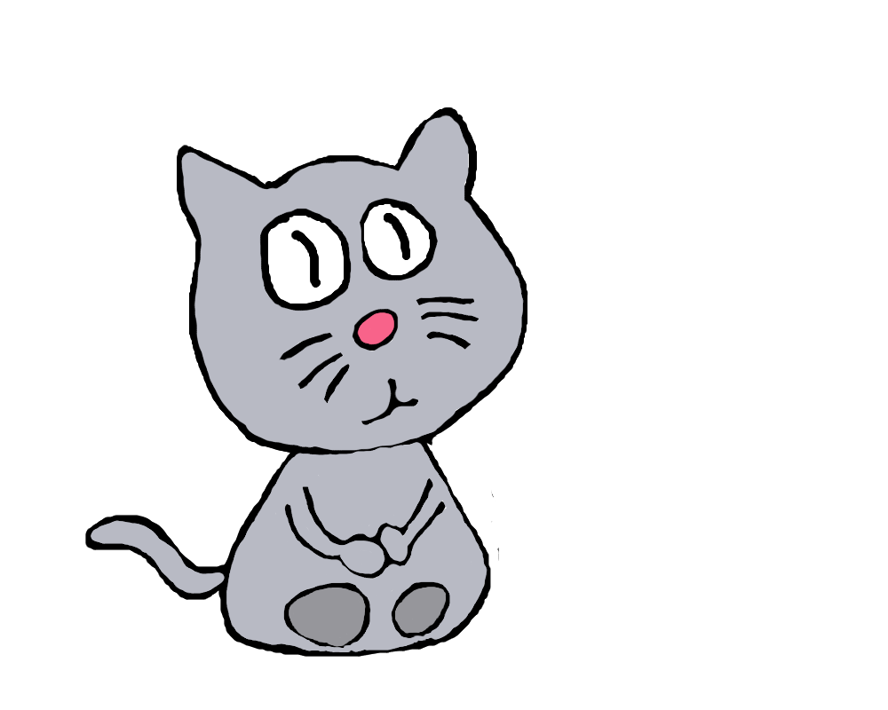
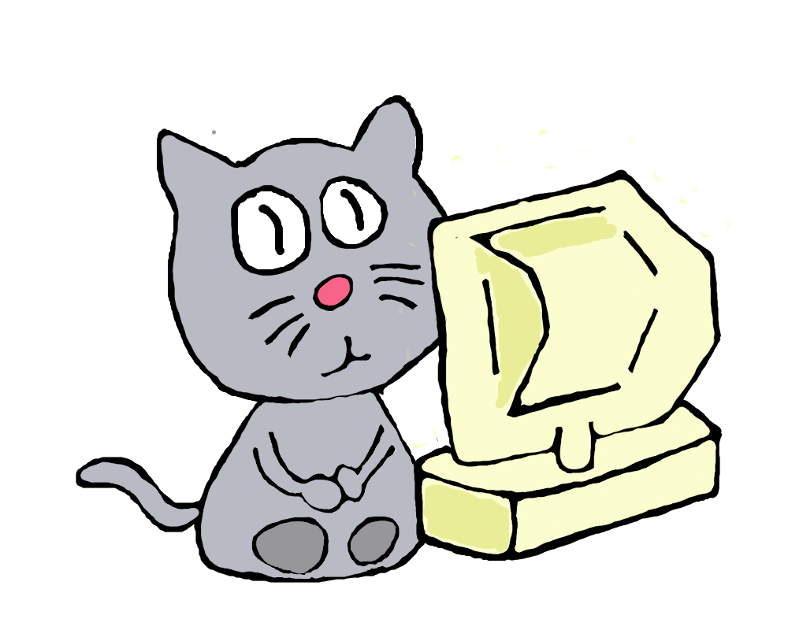
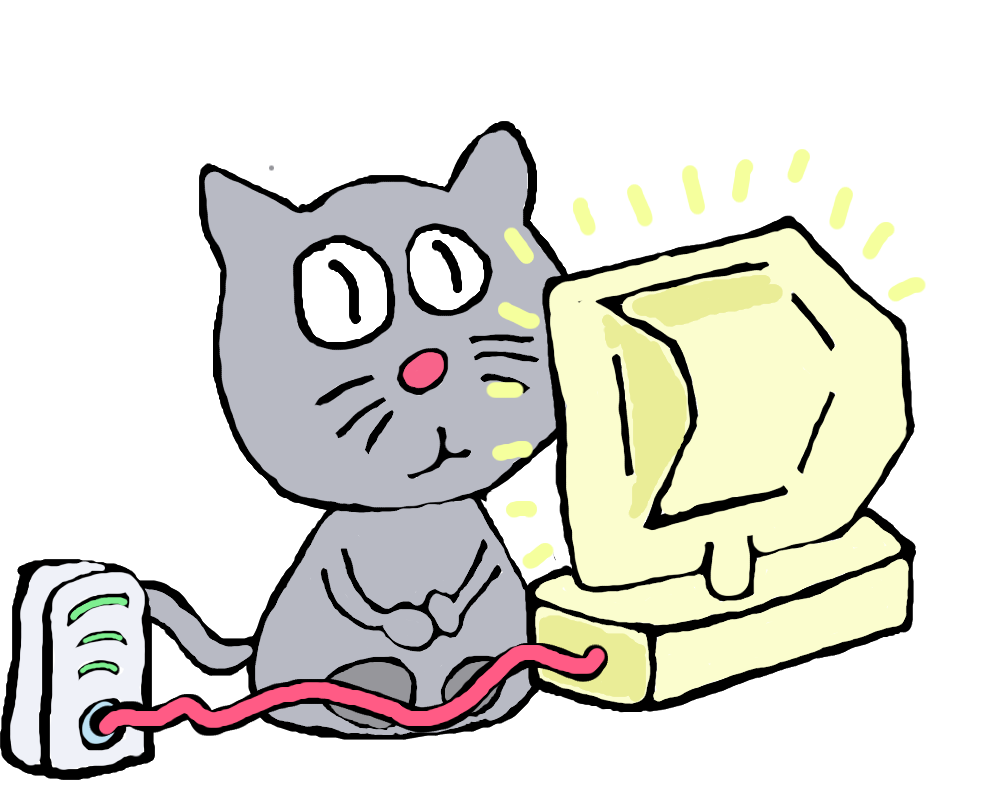
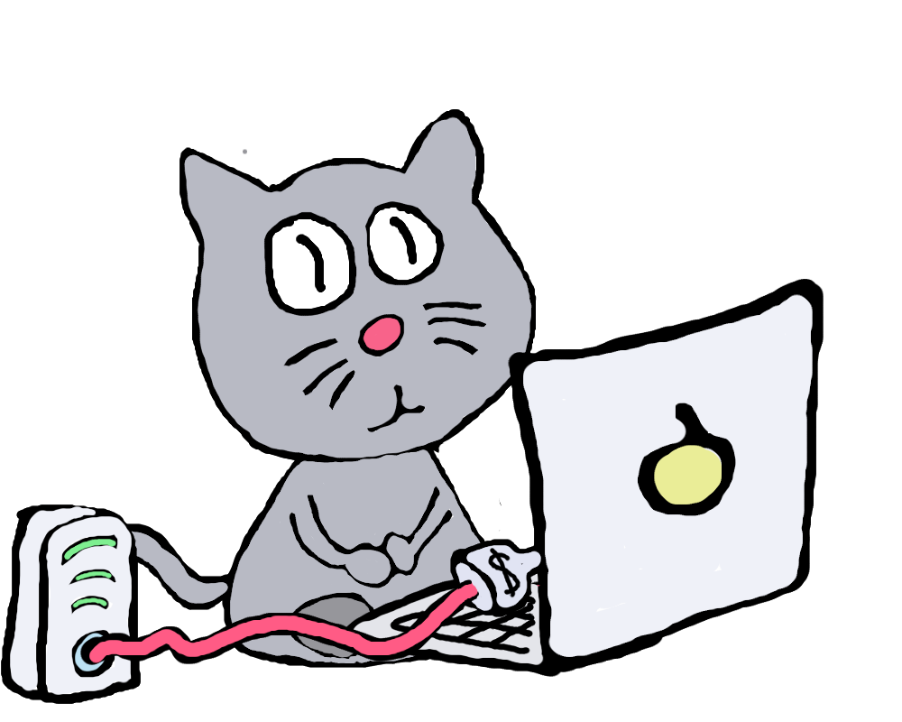
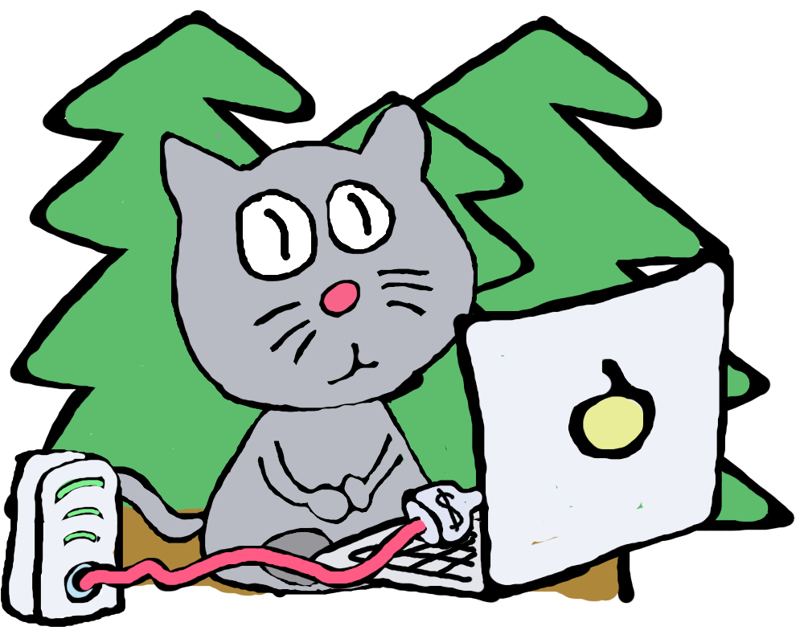
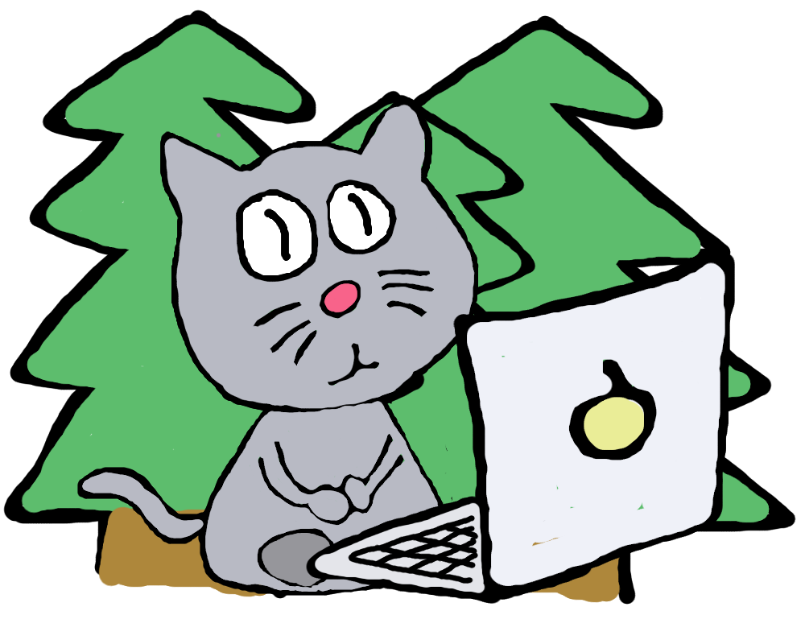
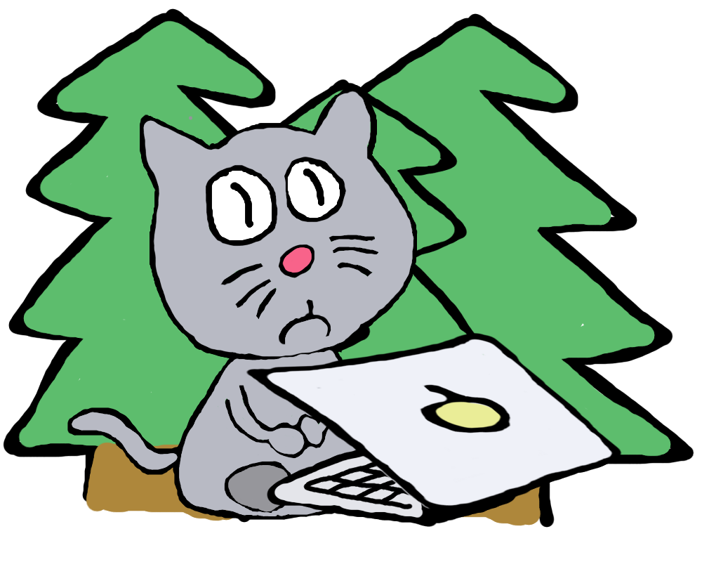
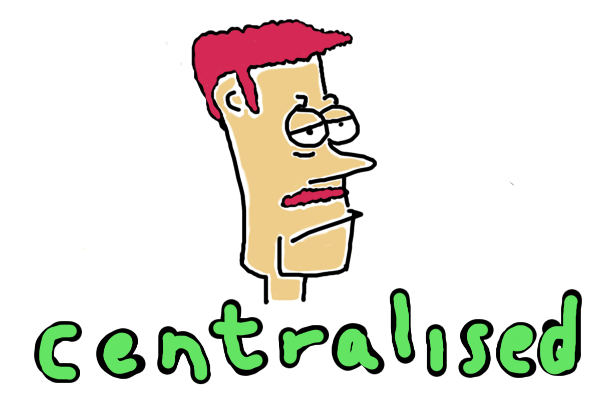
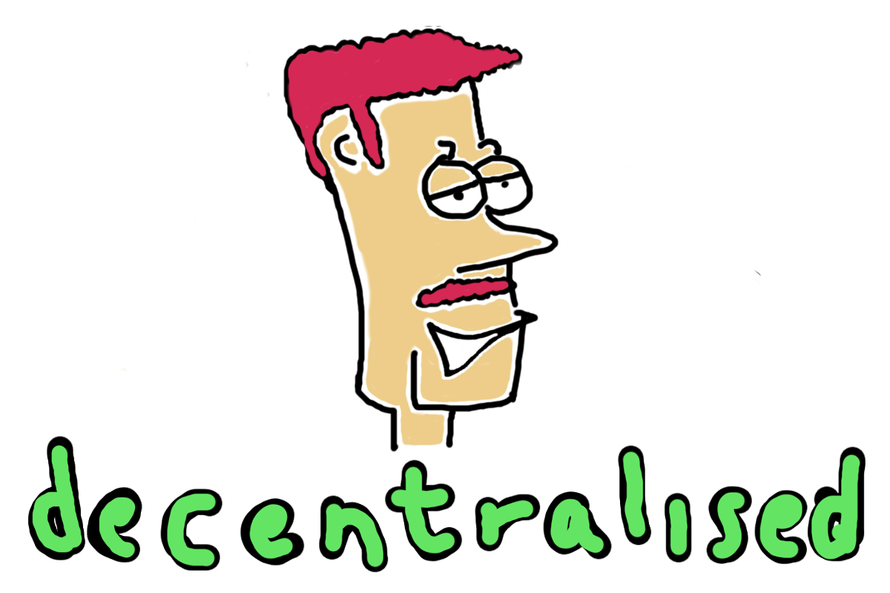

@mafintosh
8 people
1900 npm modules









Websites/apps assume central host
p2p data structures
(append only log)
(describe how it works)
(security stuff)
npm install hypercore
(live coding demo)
(many use cases)
Live streaming!
every new keyframe is an entry in the log
hypervision
(demo)
File sharing!
Use two logs
One for file listing
One for file content concatted
hyperdrive
(demo)
dat